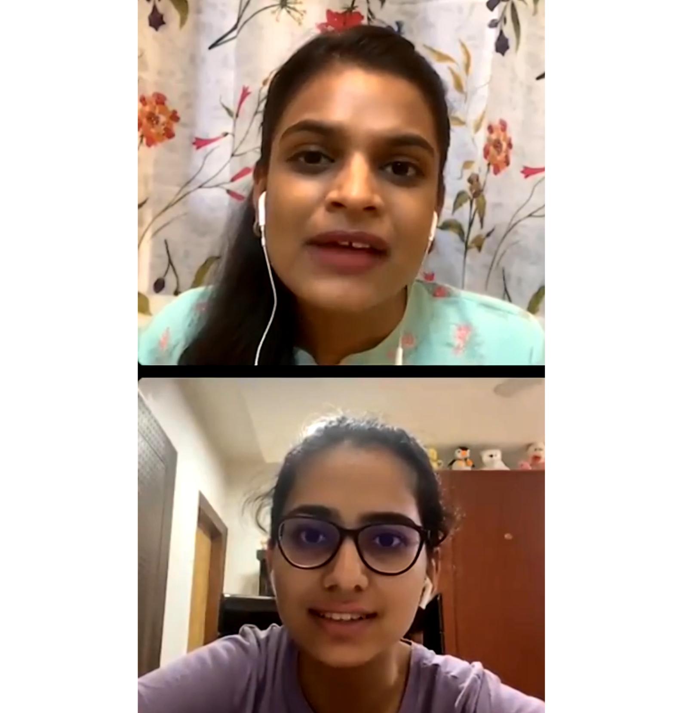
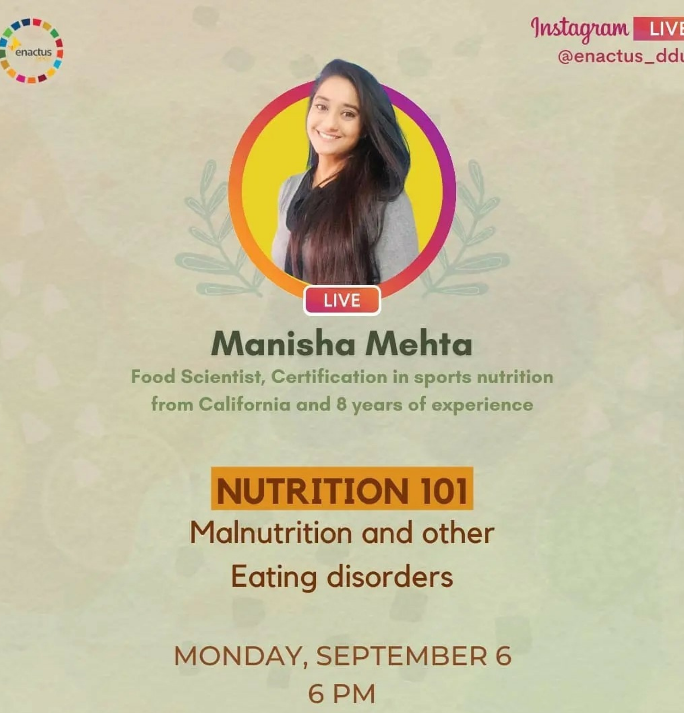

- 
- 
≪
≫
Our Events
-
Enactus DDUC successfully conducted a very insightful and
informative session on ‘Nutrition 101: Malnutrition and other eating
disorders’ with clinical dietician and sports nutritionist Ms.
Manisha Mehta, a food scientist, holds a certification in sports
nutrition from California with 8+ years of experience.
-
On the occasion of National Nutrition Week Enactus DDUC conducted an
informative live session on NUTRITION 101 with DT. LAKSHITA JAIN.
Dt. Lakshita is the founder of health clinic Nutr. She is constantly
writing leading newspapers such as Times of India, HT city, Femina,
Cosmopolitan, and many more. She is a diabetes educator, meat
technologist and has been counseling people on PCOS, weight loss,
right eating.